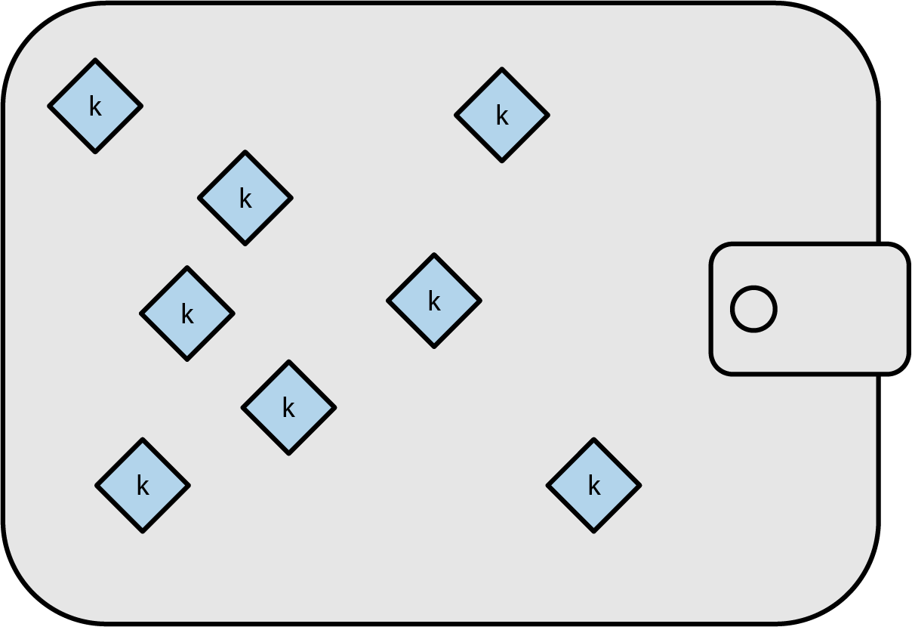
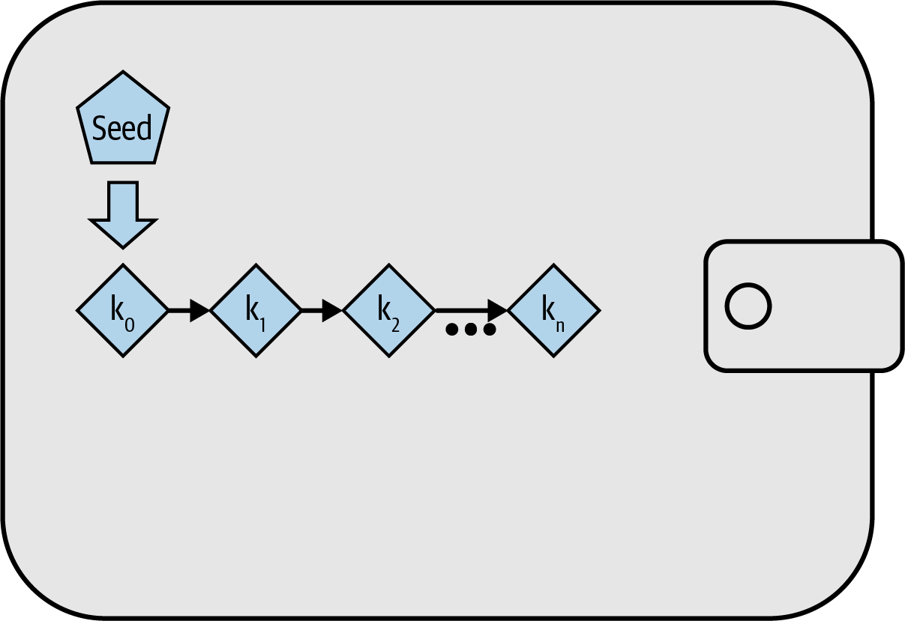
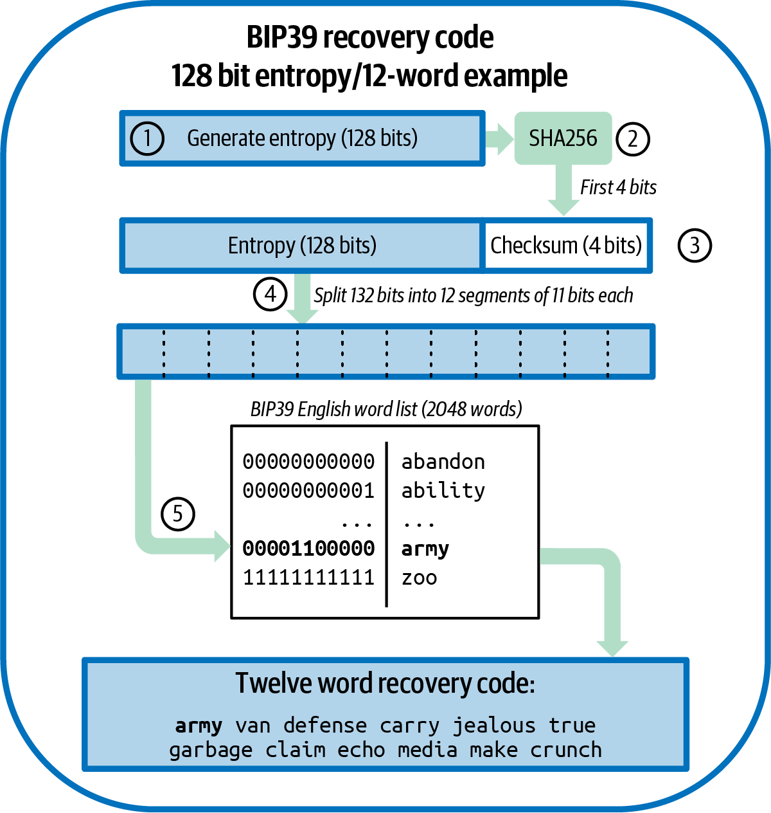
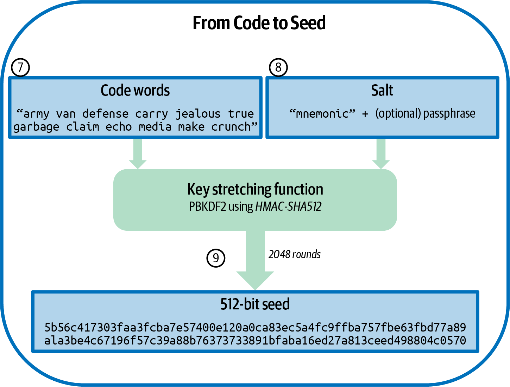
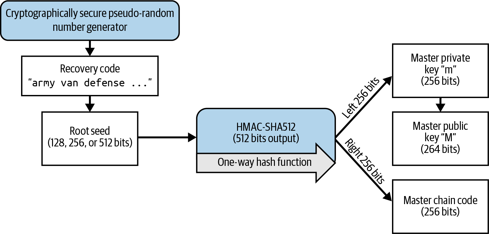
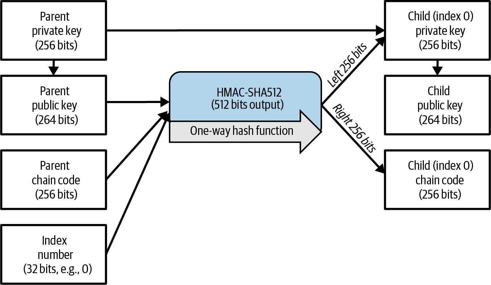
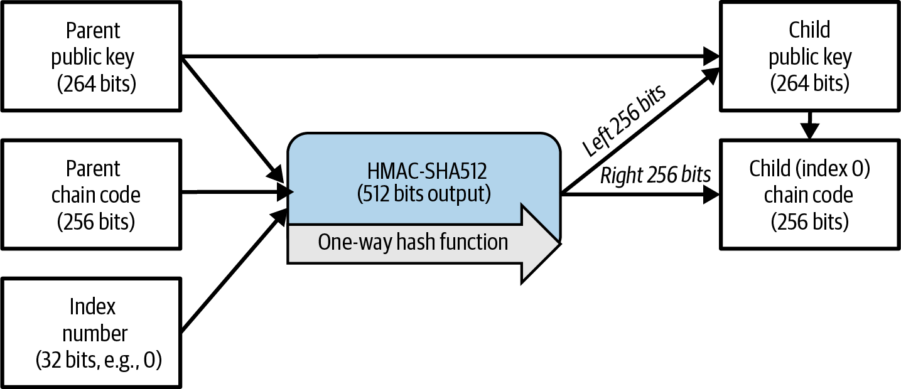
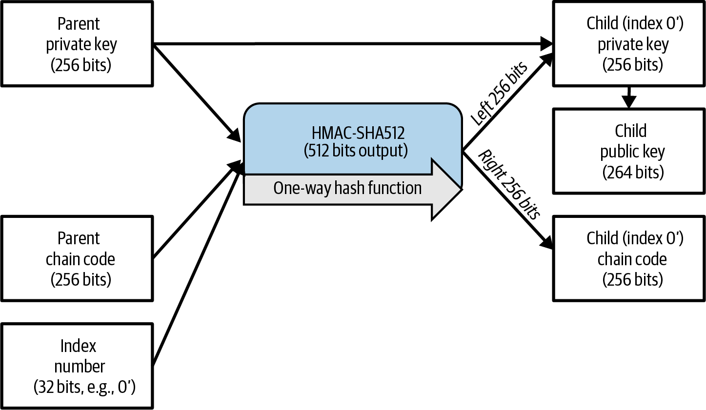

钱包恢复
创建公私钥对是比特币钱包能够接收和花费比特币的关键环节。但一旦丢失对私钥的访问，任何人都将永远无法花费收到对应公钥下的比特币。多年来，钱包与协议的开发者们一直致力于设计一种系统，让用户能够在出现问题后恢复对其比特币的访问，同时不会在其他时间损害安全性。
In 本章中，我们将考察钱包为了防止数据丢失变成资金损失而采用的一些不同方法。有些解决方案几乎没有缺点，已被现代钱包普遍采用，我们会直接将其推荐为最佳实践。另一些解决方案则同时存在优点和缺点，因此不同钱包的作者会做出不同的权衡。在这种情况下，我们会介绍各种可选方案。
独立密钥生成
实物现金钱包里装的就是现金， 因此许多人误以为比特币钱包里装的就是比特币，这并不奇怪。事实上，许多人所说的 比特币钱包——我们称之为钱包数据库，以便与钱包应用区分开—— 里面只包含密钥。这些密钥与区块链上记录的比特币相关联。通过向比特币全节点证明 你掌控这些密钥，你就可以花费相应的比特币。
简单的钱包数据库既包含用于接收比特币的公钥，也包含用于创建授权花费这些比特币所需签名的私钥。其他钱包的数据库可能只包含公钥，或者只包含授权一笔花费交易所需的部分私钥。它们的钱包应用通过与外部工具（例如硬件签名设备或多重签名方案中的其他钱包）协作，来生成所需的签名。
钱包应用可以独立生成它后续打算使用的每一把密钥，如 非确定性密钥生成：钱包数据库中存放着一组独立生成的密钥。 所示。早期所有的比特币钱包应用都是这样做的，但这要求用户在每次生成并分发新密钥时都备份钱包数据库——而生成新密钥的频率可能高达每收一笔款就生成一个新地址。如果未能及时备份钱包数据库，用户就会失去对那些尚未备份的密钥所接收资金的访问权。
对每个独立生成的密钥，用户都需要备份大约 32 字节，外加一些额外开销。一些用户和钱包应用试图通过只使用一把密钥来最小化需要备份的数据量。虽然这样做可以是安全的，但会严重削弱该用户以及与其交易的所有人的隐私性。重视自己和同伴隐私的人会为每笔交易创建新的密钥对，由此产生的钱包数据库基本上只能用数字介质来备份。

现代钱包应用不再独立生成密钥，而是使用一种可重复的（确定性的）算法，从单个随机种子派生出所有密钥 。
确定性密钥生成
哈希函数 在输入相同时总会产生相同的输出，但只要输入有哪怕极小的变化，输出就会不同。如果哈希函数在密码学上是安全的，那么任何人都无法预测新的输出——即使他们知道新的输入也不行。
这使我们能够将一个随机值转换为几乎无限多个看似随机的值。更有用的是，之后用同样的哈希函数再次对同样的输入（称为 种子 ）进行运算，会产生同样的、看似随机的值：
# Collect some entropy (randomness)
$ dd if=/dev/random count=1 status=none | sha256sum
f1cc3bc03ef51cb43ee7844460fa5049e779e7425a6349c8e89dfbb0fd97bb73 -
# Set our seed to the random value
$ seed=f1cc3bc03ef51cb43ee7844460fa5049e779e7425a6349c8e89dfbb0fd97bb73
# Deterministically generate derived values
$ for i in {0..2} ; do echo "$seed + $i" | sha256sum ; done
50b18e0bd9508310b8f699bad425efdf67d668cb2462b909fdb6b9bd2437beb3 -
a965dbcd901a9e3d66af11759e64a58d0ed5c6863e901dfda43adcd5f8c744f3 -
19580c97eb9048599f069472744e51ab2213f687d4720b0efc5bb344d624c3aa -
如果我们把派生出的值用作私钥，那么之后只要用我们的种子配合之前所用的算法，就能再次生成完全相同的私钥。使用确定性密钥生成的用户，只需记录其种子以及所用确定性算法的引用，就能备份钱包中的所有密钥。例如，即使 Alice 在一百万个不同地址上收到了一百万枚比特币，要日后恢复对这些比特币的访问，她需要备份的也只是：
f1cc 3bc0 3ef5 1cb4 3ee7 8444 60fa 5049 e779 e742 5a63 49c8 e89d fbb0 fd97 bb73
基本的顺序式确定性密钥生成的逻辑示意图如 确定性密钥生成：根据种子为钱包数据库派生出的确定性密钥序列。 所示。然而，现代钱包应用采用了更巧妙的方法来实现这一点，可以将公钥的派生与对应私钥的派生分开，从而使私钥可以比公钥更安全地存储 。

公开子密钥派生
在 [public_key_derivation] 中，我们学习了 如何使用椭圆曲线密码学（ECC）从一个私钥创建公钥。尽管椭圆曲线上的运算并不直观，但它们类似于普通算术中使用的加法、减法和乘法。换句话说，可以对公钥进行加减或乘运算。回想我们在 [public_key_derivation] 中用生成元 G 从私钥 k 生成公钥 K 的运算：
通过在等式两边同时加上同一个值，就可以创建一对派生密钥，称为子密钥对：
|
在本书的方程中，对于 K = k × G 这类用来计算某个变量值的运算，我们使用单等号。我们用双等号来表示等式两边相等，或者表示如果两边不相等运算应当返回 false（而非 true）。 |
由此带来的一个有趣后果是：对公钥加上 123 这件事可以完全用公开信息来完成。例如，Alice 生成公钥 K 并交给 Bob。Bob 不知道私钥，但他知道全局常量 G，所以他可以在公钥上加上任意值，产生一个派生的公开子密钥。如果他随后把自己加到公钥上的那个值告诉 Alice，她就可以把同样的值加到私钥上，从而得到与 Bob 所创建的公开子密钥相对应的派生私有子密钥。
换句话说，即使你对父私钥一无所知，也可以创建子公钥。加到公钥上的值被称为 key tweak 。如果使用确定性算法来生成 key tweak，那么不知道私钥的人就可以从一个公开的父密钥派生出本质上无限的公开子密钥序列。掌握父私钥的人随后可以用相同的 key tweak 创建所有对应的私有子密钥。
这种技术常用于将钱包应用的前端（不需要私钥）与签名操作（需要私钥）分离。例如，Alice 的前端把她的公钥分发给想要支付给她的人。之后，当她要花费收到的钱时，她可以把所用的 key tweak 提供给一个安全保管原始私钥的 hardware signing device（有时容易混淆地称为 hardware wallet） 。硬件签名器用这些 tweak 派生出所需的子私钥，并用它们对交易进行签名，再把已签名的交易返回给安全性较低的前端，由其广播到比特币网络。
公开子密钥派生可以产生一个类似于前面所见 确定性密钥生成：根据种子为钱包数据库派生出的确定性密钥序列。 的线性密钥序列，但现代钱包应用还用了一个额外的技巧，可以提供一棵密钥树而不是单一序列，详见下一节 。
分层确定性（HD）密钥生成（BIP32）
我们所知的每一个 现代比特币钱包都默认使用分层确定性（HD）密钥生成。该标准定义于 BIP32，使用确定性密钥生成以及可选的公开子密钥派生，配合一个能产生密钥树的算法。在这棵树中，任何一把密钥都可以作为一个子密钥序列的父密钥，而这些子密钥中的任何一把又可以成为另一段子密钥序列的父密钥（即原密钥的孙密钥）。树的深度没有任意限制。这种树结构如 HD 钱包：从单个种子生成的一棵密钥树。 所示。

这种树结构可以用来表达额外的组织含义，例如：某一特定子密钥分支用于接收进来的付款，而另一个分支用于接收外发付款的找零。密钥分支也可以用于企业场景，将不同分支分配给不同部门、子公司、特定职能或会计科目。
我们将在 从种子创建 HD 钱包 中对 HD 钱包做详细的探讨。
种子与恢复码
HD 钱包 是一种非常强大的机制，可以管理由单一种子派生出的大量密钥。如果你的钱包数据库出现损坏或丢失，你可以用你原始的种子重新生成钱包中的所有私钥 。但如果别人拿到了你的种子，他们同样能够生成所有的私钥，从而可以从单签名钱包中盗走全部比特币，并降低多重签名钱包中比特币的安全性。本节我们将介绍几种 recovery code（恢复码），它们的设计目的是让备份更简单、更安全。
虽然种子本质上是很大的随机数，通常是 128 到 256 位，但大多数恢复码使用人类语言的单词。使用单词的一个主要动机是让恢复码易于记忆。例如，参见 分别用十六进制和英文单词编码的种子 中分别用十六进制和单词编码的恢复码。
Hex-encoded: 0C1E 24E5 9177 79D2 97E1 4D45 F14E 1A1A Word-encoded: army van defense carry jealous true garbage claim echo media make crunch
在某些情况下，能记住恢复码可能是一种很强大的功能 ，例如当你无法在不被第三方扣押或检查（从而可能盗走你比特币）的情况下携带实物（如写在纸上的恢复码）时。然而大多数情况下，仅依赖记忆是危险的：
-
如果你忘记了恢复码，又失去了对原始钱包数据库的访问，你的比特币就永远丢失了。
-
如果你死亡或重伤，而你的继承人无法访问你原始的钱包数据库，他们将无法继承你的比特币。
-
如果有人认为你记住了某个能让他们拿到比特币的恢复码，他们可能会试图胁迫你交出这串码。截至本文撰写时，比特币贡献者 Jameson Lopp 已经 记录 了 100 多起针对比特币及其他数字资产疑似持有者的实体攻击事件，其中至少三人死亡，还有许多受害者被酷刑、被劫持，或家人受到威胁。
|
即使你使用的是为便于记忆而设计的恢复码，我们也强烈建议你考虑把它写下来。 |
截至本文撰写时，几种 不同类型的恢复码被广泛使用：
- BIP39
-
过去十年中最流行的恢复码生成方法 ，BIP39 涉及生成一个随机字节序列，添加校验和，并把数据编码为 12 至 24 个单词（可以本地化为用户的母语）。这些单词（加上一个可选的密码短语）会经过一个 key-stretching function（密钥扩展函数），其输出用作种子。BIP39 恢复码有几处不足，后来的方案试图加以解决。
- Electrum v2
-
用于 Electrum 钱包（2.0 及以上版本）的 这种基于单词的恢复码相比 BIP39 有若干优势。它不依赖一个必须由每个兼容程序的每个版本都实现的全局词表，而且其恢复码包含一个版本号，能提高可靠性和效率。与 BIP39 类似，它支持可选的密码短语（Electrum 称之为 seed extension），并使用相同的密钥扩展函数。
- Aezeed
-
用于 LND 钱包的 另一种基于单词的恢复码，相比 BIP39 有所改进。它包含两个版本号：一个是内部的，可以消除升级钱包应用时的若干问题（类似 Electrum v2 的版本号）；另一个是外部的，可以通过递增来改变恢复码底层的密码学特性。它还在恢复码中包含一个 wallet birthday，即一个指向用户创建钱包数据库日期的引用。这允许恢复过程查找与钱包相关的所有资金时无需扫描整条区块链，对注重隐私的轻量级客户端尤其有用。它支持在不需要把资金转移到新种子的情况下更改密码短语或修改恢复码的其他方面——用户只需备份新的恢复码即可。与 Electrum v2 相比的一个缺点是：和 BIP39 一样，它依赖于备份方和恢复方的软件支持相同的词表。
- Muun
-
用于 Muun 钱包 的恢复码，该钱包默认要求花费交易由多把密钥签名。这是一种非单词形式的码，必须附带额外信息（Muun 目前以 PDF 形式提供）。这种恢复码与种子无关，而是用来解密 PDF 中所包含的私钥 [.keep-together]# # 。虽然与 BIP39、Electrum v2 和 Aezeed 的恢复码相比显得笨重，但它支持新钱包中越来越常见的新技术与标准，如 Lightning Network（LN）支持、output script descriptor 和 miniscript。
- SLIP39
-
作为 BIP39 的后继者 ，与 BIP39 有部分相同的作者，SLIP39 允许把单个种子用多个恢复码分发，分别存放在不同地点（或交给不同的人）保管。创建恢复码时，你可以指定恢复种子所需的恢复码数量。例如，你创建五个恢复码，但只需要其中三个就能恢复种子。SLIP39 支持可选密码短语，依赖全局词表，且没有直接提供版本管理。
|
本书撰写期间还提出了一种新的恢复码分发系统 ，与 SLIP39 有相似之处。Codex32 允许仅借助打印的说明、剪刀、精密刀、铜钉和一支笔——再加上隐私环境和几个小时空闲时间——就能创建和验证恢复码。或者，信任计算机的人也可以用数字设备上的软件即时创建恢复码。你最多可以创建 31 个恢复码存放在不同位置，并指定恢复种子所需的码的数量。作为一项新提案，Codex32 的细节在本书出版前可能会发生重大变化，因此我们鼓励所有对分布式恢复码感兴趣的读者了解其 最新进展 。 |
备份非密钥数据
钱包数据库 中最重要的数据是它的私钥。如果你失去对私钥的访问，你就失去了花费比特币的能力。确定性密钥派生和恢复码为备份和恢复你的密钥及其所控制的比特币提供了一个相当稳健的方案。但是，必须考虑到许多钱包数据库存储的不仅仅是密钥——它们还存储了用户为每笔收发交易自己添加的信息。
例如，当 Bob 在向 Alice 发送发票时创建一个新地址时，他会为生成的地址添加一个 label ，以便把她的付款与他收到的其他付款区分开来。出于同样的原因，当 Alice 向 Bob 的地址付款时，她会把这笔交易标注为支付给 Bob。一些钱包还会在交易中添加其他有用信息，例如当前汇率，这在某些司法辖区计算税款时很有用。这些标签完全保存在各自的钱包中——不会共享到网络中——既保护了隐私，也避免让不必要的个人数据进入区块链。例子可参见 [alice_tx_labels]。
| 日期 | 标签 | BTC |
|---|---|---|
2023-01-01 |
从 Joe 处购买比特币 |
+0.00100 |
2023-01-02 |
支付给 Bob 的播客费 |
−0.00075 |
然而，由于地址和交易标签只保存在各个用户自己的钱包数据库中，并且它们不是确定性的，因此无法仅凭恢复码恢复。如果恢复方式仅基于种子，那么用户能看到的只有一份大致的交易时间和比特币金额清单。这会让你很难弄清楚自己过去是如何使用资金的。想象一下查看一年前的银行或信用卡账单，上面有每笔交易的日期和金额，但"描述"一栏一片空白。
钱包应该为用户提供一种便捷的方式来备份标签数据。这看上去理所当然，但有不少被广泛使用的钱包应用，虽然能轻松地创建和使用恢复码，却根本没有提供备份或恢复标签数据的途径。
此外，钱包应用如果能提供一种标准化的标签导出格式，以便在其他应用（例如会计软件）中使用，可能会非常有用。BIP329 提出了一种这样的格式标准。
实现了基本比特币支持之外协议的钱包应用可能还需要或希望存储其他数据。例如，截至 2023 年，越来越多的应用增加了通过 Lightning Network（LN）收发交易的支持。虽然 LN 协议提供了一种在数据丢失时恢复资金的方法，称为 static channel backups，但它不能保证一定成功。如果你钱包连接的节点意识到你丢失了数据，它可能就能从你这里盗走比特币。如果它在你丢失数据库的同时也丢失了自己的钱包数据库，而你们双方都没有充分的备份，那么双方都会损失资金。
这再次说明，用户和钱包应用都需要做的不止是备份一个恢复码。
少数钱包应用采用的一种解决方案是频繁地、自动地用从种子派生的某把密钥来加密钱包数据库，并创建完整备份。比特币密钥必须不可猜测，现代加密算法被认为非常安全，因此除了能生成种子的人之外，应该没有人能打开加密备份。这样就可以安全地把备份存放在不受信任的计算机上，比如云托管服务，甚至随机的网络节点上。
之后，如果原始钱包数据库丢失，用户可以把恢复码输入钱包应用以恢复种子。然后应用就可以取回最新的备份文件，重新生成加密密钥，解密备份，并恢复用户所有的标签和其他协议相关数据 。
备份密钥派生路径
在一棵 BIP32 密钥树中，大约有四十亿把第一层密钥；其中每一把都可以再有自己的四十亿个子密钥，每个子密钥又可能各自有四十亿个子密钥，依此类推。钱包应用不可能生成 BIP32 树中所有密钥的哪怕一小部分，这意味着从数据丢失中恢复不仅需要知道恢复码、获取种子的算法（如 BIP39）和确定性密钥派生算法（如 BIP32），还需要知道你的钱包应用在密钥树中使用了哪些路径来生成它分发出去的具体密钥。
这个问题有两种被采用的解决方案。第一种是使用标准路径。每当钱包应用想生成的地址类型发生变化时，就会有人创建一个 BIP 来规定要使用的密钥派生路径。例如，BIP44 把 m/44'/0'/0' 定义为用于 P2PKH 脚本（一种 legacy 地址）密钥的路径。实现该标准的钱包应用在初次启动以及从恢复码恢复后，都会使用该路径下的密钥。我们把这种方案称为 implicit paths（隐式路径） 。BIP 定义的若干常见隐式路径见 [bip_implicit_paths]。
| 标准 | 脚本 | BIP32 路径 |
|---|---|---|
BIP44 |
P2PKH |
|
BIP49 |
Nested P2WPKH |
|
BIP84 |
P2WPKH |
|
BIP86 |
P2TR Single-key |
|
第二种方案是把路径信息和恢复码一起备份，明确指出哪个路径用于哪种脚本。我们把这种方案称为 explicit paths（显式路径） 。
隐式路径的优点是用户无需记录自己使用了哪些路径。如果用户把恢复码输入到之前使用的同一款钱包应用（同版本或更高版本），它会自动为先前使用过的路径重新生成密钥。
隐式脚本的缺点是不够灵活。输入恢复码时，钱包应用必须为它支持的每一条路径都生成密钥，并扫描区块链上涉及这些密钥的交易，否则可能会找不到用户的全部交易。对于支持很多功能、每个功能都有自己路径的钱包，如果用户只用过其中少数几项功能，这种做法是浪费的。
对于不包含版本号的隐式路径恢复码（如 BIP39 和 SLIP39），当某个钱包应用的新版本不再支持某条旧路径时，它无法在恢复过程中向用户警告：你的部分资金可能找不到。反过来同样有这个问题：如果用户把恢复码输入到旧版软件中，旧软件就找不到新路径，而用户可能正是在这些新路径上接收过资金。包含版本信息的恢复码（如 Electrum v2 和 Aezeed）能检测到用户输入的是旧版还是新版恢复码，并将其引导到合适的资源。
隐式路径的最后一个后果是：它只能包含通用信息（如标准化路径）或可从种子派生出的信息（如密钥）。对特定用户重要的非确定性信息无法通过恢复码来恢复。例如，Alice、Bob 和 Carol 收到的资金只能由其中两人签名才能花费。虽然 Alice 只需要 Bob 或 Carol 中一人的签名就能花费，但她需要他们两人的公钥才能在区块链上找到他们的联合资金。这意味着他们每个人都必须备份三个人全部的公钥。随着多重签名和其他高级脚本在比特币上变得越来越普遍，隐式路径的不灵活性也变得愈发突出。
显式路径的优点是能够准确地描述哪些密钥应当与哪些脚本一起使用。无需支持过时脚本，没有前向或后向兼容性问题，任何额外信息（如其他用户的公钥）都可以直接包含进来。其缺点是要求用户在恢复码之外备份额外的信息。这些额外信息通常不会危及用户的安全性，因此不需要像恢复码那样高强度的保护，不过它可能会降低用户隐私，仍需要一定程度的保护。
截至本文撰写时，几乎所有使用显式路径的钱包应用都使用 output script descriptors 标准（简称 descriptors），其规范见 BIP 380、381、382、383、384、385、386 和 389。Descriptor 描述了一个脚本，以及与该脚本一起使用的密钥（或密钥路径）。一些示例 descriptor 参见 [sample_descriptors]。
| Descriptor | 说明 |
|---|---|
|
使用给定公钥的 P2PKH 脚本 |
|
P2SH 多重签名，要求这两把密钥对应的两个签名 |
|
BIP32 指纹为 |
长期以来，只为单签名脚本设计的钱包应用倾向于使用隐式路径。为多重签名或其他高级脚本设计的钱包应用则越来越多地采用基于 descriptor 的显式路径。两者兼顾的应用通常会同时遵循隐式路径的标准并提供 descriptor 支持 。
钱包技术栈详解
现代钱包开发者可以从多种不同技术中选择，帮助用户创建和使用备份——而新的方案每年都在出现。我们不再对本章前面介绍的各个选项一一细述，本章余下部分将聚焦于截至 2023 年初我们认为在钱包中使用最广泛的一套技术栈：
-
BIP39 恢复码
-
BIP32 HD 密钥派生
-
BIP44 风格的隐式路径
所有这些标准都从 2014 年或更早就开始存在，要找到使用它们的更多资源不会有任何困难。不过，如果你乐于尝鲜，我们鼓励你研究更现代的标准，它们可能提供额外的功能或更高的安全性。
BIP39 恢复码
BIP39 恢复码是一种单词序列，用于表示（编码）一个用作种子来派生确定性钱包的随机数。该单词序列足以重新生成种子，进而重新生成所有派生出的密钥。实现基于 BIP39 恢复码的确定性钱包的钱包应用，会在首次创建钱包时向用户展示 12 到 24 个单词的序列。这一单词序列就是钱包备份，可以用来在同一款或任意兼容的钱包应用中恢复并重新生成所有密钥。恢复码使得用户更容易备份，因为它们易于阅读和准确誊写。
|
恢复码 经常被人与"brainwallet"混淆。两者并不一样。主要区别在于 brainwallet 由用户自己选择单词，而恢复码是由钱包随机创建后展示给用户的。这个重要区别使得恢复码安全得多，因为人类是非常糟糕的随机性来源。 |
请注意，BIP39 只是恢复码标准的一种实现。BIP39 由 Trezor 硬件钱包背后的公司提出，与许多（虽然并非全部）其他钱包应用兼容。
生成恢复码
恢复码 由钱包应用按照 BIP39 定义的标准化流程自动生成。钱包从一个熵源开始，添加校验和，然后将熵映射到词表：
-
创建一个 128 到 256 位的随机序列（熵）。
-
计算该随机序列的 SHA256 哈希，取其前 (熵长度/32) 位作为校验和。
-
把校验和添加到随机序列的末尾。
-
把结果分割成 11 位长度的片段。
-
把每个 11 位的值映射到预定义的 2048 词词表中的一个单词。
-
恢复码就是这一单词序列。
生成熵并编码为恢复码。 展示了如何使用熵生成 BIP39 恢复码。

[table_4-5] 展示了熵数据大小与恢复码单词数量之间的关系 。
| 熵（位） | 校验和（位） | 熵 + 校验和（位） | 恢复码单词数 |
|---|---|---|---|
128 |
4 |
132 |
12 |
160 |
5 |
165 |
15 |
192 |
6 |
198 |
18 |
224 |
7 |
231 |
21 |
256 |
8 |
264 |
24 |
从恢复码到种子
恢复码 表示长度为 128 到 256 位的熵。然后再通过 key-stretching function PBKDF2 把这段熵派生为一个更长的（512 位）种子。生成的种子用于构建确定性钱包并派生其密钥。
key-stretching 函数接收两个参数：熵和一个 salt 。salt 在 key-stretching 函数中的作用是增加构建查找表以进行暴力破解攻击的难度。在 BIP39 标准中，salt 还有另一个用途——它允许引入一个密码短语，作为保护种子的额外安全因子，我们将在 BIP39 中的可选密码短语 中详细介绍。
|
该 key-stretching 函数有 2048 轮哈希，使得用软件暴力破解恢复码略微更难一些。专用硬件受到的影响并不显著。对于需要猜出用户整条恢复码的攻击者来说，恢复码的长度（最少 128 位）已经提供了远超充裕的安全性。但在攻击者可能获知用户一小部分恢复码的情况下，key-stretching 通过减慢攻击者验证不同恢复码组合的速度，增加了一些安全性。BIP39 的参数即使在它差不多十年前首次发布时，按现代标准也算偏弱，这很可能是为了与配备低性能 CPU 的硬件签名设备兼容而妥协的结果。BIP39 的一些替代方案采用了更强的 key-stretching 参数，例如 Aezeed 使用更复杂的 Scrypt 算法做 32,768 轮哈希，尽管这样在硬件签名设备上运行起来可能不那么方便。 |
步骤 7 到 9 描述的过程承接 生成恢复码 中先前描述的过程：
- PBKDF2 key-stretching 函数的第一个参数是步骤 6 产生的 熵。
- PBKDF2 key-stretching 函数的第二个参数是
salt。salt 由常量字符串
"
mnemonic" 与用户提供的可选密码短语字符串拼接而成。 - PBKDF2 用 HMAC-SHA512 算法对恢复码和 salt 参数进行 2048 轮哈希扩展，最终输出一个 512 位的值。这个 512 位的值就是种子。
从恢复码到种子。 展示了如何用恢复码生成种子。

#bip39_128_no_pass、 #bip39_128_w_pass 和 #bip39_256_no_pass 几张表展示了一些恢复码示例及其生成的种子 。
熵输入（128 位） |
|
恢复码（12 个单词） |
|
密码短语 |
（无） |
种子（512 位） |
|
熵输入（128 位） |
|
恢复码（12 个单词） |
|
密码短语 |
SuperDuperSecret |
种子（512 位） |
|
熵输入（256 位） |
|
恢复码（24 个单词） |
|
密码短语 |
（无） |
种子（512 位） |
|
BIP39 中的可选密码短语
BIP39 标准允许在派生种子时使用一个可选密码短语。如果不使用密码短语，则恢复码会与常量字符串 "mnemonic" 组成的 salt 一起进行扩展，对于任一给定的恢复码都会生成一个特定的 512 位种子。如果使用密码短语，扩展函数会从同一条恢复码生成一个 不同的 种子。事实上，对于一条给定的恢复码，每一种可能的密码短语都会得到一个不同的种子。本质上不存在"错误的"密码短语。所有密码短语都是合法的，并且都会得到不同的种子，构成数量极其庞大的、尚未初始化的可能钱包集合。这个集合的规模（2512）如此之大，以至于实际上不可能通过暴力破解或意外猜中其中正在使用的某个钱包。
|
在 BIP39 中没有"错误的"密码短语。每一条密码短语都对应某个钱包，除非该钱包曾被使用，否则就是空的。 |
可选密码短语带来两个重要特性：
-
第二因子（你所记忆的东西），使得恢复码单凭自身没有用处，从而保护恢复码免受随机窃贼的破坏。要防范精通技术的窃贼，你需要使用一条非常强的密码短语。
-
一种合理推诿或"胁迫钱包（duress wallet）"机制：选定的某个密码短语对应一个只装有少量资金的钱包，用以转移攻击者的注意力，使其偏离那个装着大部分资金的"真正"钱包。
需要注意的是，使用密码短语也会带来丢失资金的风险：
-
如果钱包持有者丧失行为能力或死亡，且没有他人知道密码短语，那么种子就毫无用处，钱包中存放的全部资金都将永久丢失。
-
反之，如果持有者把密码短语和种子备份在同一个地方，就违背了第二因子的初衷 。
密码短语非常有用，但应该只在结合精心规划的备份与恢复流程时使用， 要考虑到持有者去世后，让其家人能够恢复加密货币遗产的情形。
从种子创建 HD 钱包
HD 钱包 由一个 root seed（根种子） 创建，根种子是一个 128 位、256 位或 512 位的随机数。最常见的做法是，这个种子由上一节所述的恢复码生成或解密而来。
HD 钱包中的每一把密钥都是从这个根种子确定性地派生出来的，因此可以在任何兼容的 HD 钱包中由该种子重新生成整个 HD 钱包。这使得备份、恢复、导出和导入包含数千甚至上百万把密钥的 HD 钱包变得很容易——只需传递推导出根种子的恢复码即可。为 HD 钱包创建主密钥和主链码的过程如 从根种子创建主密钥和链码。 所示。

把根种子输入 HMAC-SHA512 算法，所得哈希用于创建一个 master private key（主私钥）（m）和一个 master chain code（主链码）（c）。
主私钥（m）随后使用我们在 [public_key_derivation] 中所见的常规椭圆曲线乘法过程 m × G 生成对应的主公钥（M）。
主链码（c）则用于在从父密钥创建子密钥的函数中引入熵，下一节会看到这一点。
私有子密钥派生
HD 钱包 使用 child key derivation（CKD）函数从父密钥派生子密钥。
CKD 函数基于一个单向哈希函数，组合了：
-
一把父私钥或公钥（未压缩密钥）
-
一个称为链码的种子（256 位）
-
一个索引号（32 位）
链码用于向过程中引入确定性的随机数据，使得仅知道索引和某把子密钥不足以派生其他子密钥。除非你也掌握链码，否则知道一把子密钥并不能让你找到它的兄弟密钥。最初的链码种子（位于树的根部）由种子生成，而后续的子链码则从各自的父链码派生。
将这三项（父密钥、链码和索引）组合并哈希，即可生成子密钥，过程如下。
父公钥、链码和索引号被组合并用 HMAC-SHA512 算法哈希，产生一个 512 位的哈希。将这个 512 位哈希分成两段 256 位。哈希输出的右半 256 位成为子密钥的链码。左半 256 位与父私钥相加，产生子私钥。在 扩展父私钥以创建子私钥。 中，我们看到索引设为 0 时的演示，用以产生父密钥的"零号"（按索引为第一个）子密钥。

更改索引就可以扩展父密钥，按顺序创建其他子密钥（例如 Child 0、Child 1、Child 2，等等）。每把父密钥可以有 2,147,483,647（231）个子密钥（231 是整个 232 范围的一半，因为另一半被保留给我们在本章后面会介绍的一类特殊派生）。
将这个过程在树中往下一层重复，每个子密钥又可成为父密钥，创建自己的子密钥，可以一代接一代无限延伸。
使用派生出的子密钥
子私钥与非确定性（随机）密钥在外观上无法区分。由于派生函数是单向函数，子密钥无法用来反推父密钥。子密钥同样无法用来找到任何兄弟密钥。如果你拥有第 n 个子密钥，你无法找到它的兄弟，例如 n–1 或 n+1 子密钥，也无法找到序列中的其他任何子密钥。只有父密钥和链码才能派生出所有子密钥。没有子链码，子密钥也无法用来派生任何孙密钥。你需要同时拥有子私钥和子链码，才能开启一个新分支并派生孙密钥。
那么子私钥单独可以用来做什么？它可以用来生成公钥和比特币地址，然后用于对交易签名，花费向该地址支付的任何资金。
|
子私钥、对应的公钥和比特币地址，都与随机创建的密钥和地址无法区分。它们属于某个序列这一事实在创建它们的 HD 钱包函数之外是不可见的。一旦创建出来，它们就像"普通"密钥一样运作 。 |
扩展密钥
正如 我们前面所见，密钥派生函数可以基于三个输入——密钥、链码和所需子密钥的索引——在树的任意层级创建子密钥。其中两个核心要素是密钥和链码，将它们组合在一起就称为 extended key（扩展密钥）。"extended key"这个术语也可以理解为"extensible key"（可扩展密钥），因为这样的密钥可以用来派生子密钥。
扩展密钥的存储和表示就是密钥与链码的简单拼接。扩展密钥有两种类型。扩展私钥是私钥与链码的组合，可以用来派生子私钥（再由子私钥派生子公钥）。扩展公钥是公钥与链码，可以用来创建子公钥（仅公钥），如 [public_key_derivation] 所述。
可以把扩展密钥视为 HD 钱包树形结构中某个分支的根。有了分支的根，就可以派生分支的其余部分。扩展私钥可以创建一整条完整分支，而扩展公钥 只能 创建一条公钥分支。
扩展密钥使用 base58check 编码，以便在不同 BIP32 兼容钱包之间方便地导出和导入。扩展密钥的 base58check 编码使用一个特殊的版本号，使得它们在编码为 base58 字符后会带上"xprv"和"xpub"前缀，便于辨识。由于扩展密钥包含的字节远多于普通地址，它也比我们之前见过的其他 base58check 编码字符串长得多。
下面是一个用 base58check 编码的扩展 私钥 示例：
xprv9tyUQV64JT5qs3RSTJkXCWKMyUgoQp7F3hA1xzG6ZGu6u6Q9VMNjGr67Lctvy5P8oyaYAL9CA WrUE9i6GoNMKUga5biW6Hx4tws2six3b9c
下面是对应的、用 base58check 编码的扩展 公钥：
xpub67xpozcx8pe95XVuZLHXZeG6XWXHpGq6Qv5cmNfi7cS5mtjJ2tgypeQbBs2UAR6KECeeMVKZBP LrtJunSDMstweyLXhRgPxdp14sk9tJPW9
公开子密钥派生
如 前面所述，HD 钱包一个非常有用的特性是：可以在 没有 私钥的情况下从父公钥派生公开子密钥。这给了我们两种派生子公钥的方式：从子私钥派生，或直接从父公钥派生。
因此，扩展公钥可以用来派生 HD 钱包结构中某个分支下的所有 公开 密钥（且仅公开密钥）。
这个捷径可以用来构建只含公钥的部署，比如服务器或应用拥有扩展公钥的副本，而完全没有任何私钥。这种部署可以产生无穷多的公钥和比特币地址，但无法花费支付到这些地址的任何资金。与此同时，在另一台更安全的服务器上，扩展私钥可以派生出所有对应的私钥，用于对交易签名并花费资金。
这一方案的一个常见应用，是在为电子商务应用提供服务的 Web 服务器上安装扩展公钥。Web 服务器可以使用公钥派生函数为每笔交易创建一个新的比特币地址（例如为客户的购物车）。Web 服务器上不会有任何容易被盗的私钥。在没有 HD 钱包的情况下，唯一的做法是在另一台独立的安全服务器上生成成千上万个比特币地址，然后预先加载到电子商务服务器上。这种方法笨重，而且需要持续维护以确保电子商务服务器不会"用光"密钥。
这种方案的另一个常见应用是冷存储或硬件签名设备。在该场景中，扩展私钥可以保存在纸钱包或硬件设备上，而扩展公钥则可以保持在线。用户可以随意创建"接收"地址，而私钥则安全地离线保存。要花费这些资金，用户可以在离线的软件钱包应用或硬件签名设备上使用扩展私钥。扩展父公钥以创建子公钥。 演示了如何扩展父公钥以派生子公钥 。

在网店中使用扩展公钥
让我们 通过看看 Gabriel 的网店，来了解 HD 钱包是如何被使用的。
Gabriel 最初是把开网店当作业余爱好，基于一个简单的托管 WordPress 页面。他的店面相当基础，只有几个页面和一个带有单一比特币地址的订单表单。
Gabriel 把他常用钱包生成的第一个比特币地址作为店铺的主比特币地址。客户使用表单提交订单并把款项发送到 Gabriel 公布的比特币地址，触发一封带订单详情的邮件给 Gabriel 处理。每周只有少量订单时，这个系统勉强够用，尽管它削弱了 Gabriel、他的客户以及他付款对象的隐私。
然而，这家小网店相当成功，吸引了大量来自本地社区的订单。很快，Gabriel 就忙不过来了。所有订单都付到同一个地址，使得正确匹配订单和交易变得困难，特别是当多个同金额订单密集到来时。
一笔典型比特币交易中，由接收方选择的元数据只有金额和付款地址。没有可以用来承载唯一发票编号的主题或留言字段。
Gabriel 的 HD 钱包凭借其无需私钥即可派生公开子密钥的能力，提供了一个好得多的解决方案。Gabriel 可以在自己的网站上加载一个扩展公钥（xpub），用它为每个客户订单派生唯一地址。唯一地址立即改善了隐私，同时也为每个订单提供了一个唯一标识符，用来追踪哪些发票已被支付。
使用 HD 钱包，Gabriel 可以从他的个人钱包应用中花费资金，而网站上加载的 xpub 只能生成地址和接收资金。HD 钱包的这一特性是非常棒的安全特性。Gabriel 的网站不包含任何私钥，因此即使网站被黑，攻击者也只能偷走 Gabriel 未来本应收到的资金，而不能偷走他过去已收到的资金。
为了从他的 Trezor 硬件签名设备中导出 xpub，Gabriel 使用基于网页的 Trezor 钱包应用。导出公钥时必须接入 Trezor 设备。注意，大多数硬件签名设备永远不会导出私钥——私钥始终保留在设备上。
Gabriel 把 xpub 复制到他网店的比特币支付处理软件中，比如被广泛使用的开源 BTCPay Server。
硬化子密钥派生
从 xpub 派生 一条公钥分支的能力非常有用，但它伴随一种潜在风险。获得 xpub 并不能获得子私钥。然而，由于 xpub 包含链码，如果某把子私钥被泄露或被知晓，就可以结合该链码派生出所有其他子私钥。一把被泄露的子私钥加上父链码，就会暴露所有子私钥。更糟的是，子私钥加上父链码可以用来反推父私钥。
为了对抗这种风险，HD 钱包提供了一种替代派生函数，称为 hardened derivation（硬化派生），它打破了父公钥与子链码之间的关系。硬化派生函数使用父 私钥 而不是父 公钥 来派生子链码。这在父/子序列中建立起一道"防火墙"，使得它产生的链码无法被用来危及父密钥或兄弟私钥。硬化派生函数看起来几乎和普通子私钥派生一模一样，只不过哈希函数的输入是父私钥而非父公钥，如 子密钥的硬化派生；不使用父公钥。 中所示。

当使用硬化的私有派生函数时，所产生的子私钥和链码与普通派生函数得到的完全不同。所得到的密钥"分支"可用来产生扩展公钥，且该扩展公钥不易受到攻击，因为它所含的链码无法被利用来揭露任何兄弟或父密钥的私钥。因此，硬化派生被用来在使用扩展公钥的层级之上"挖出"一道间隙。
简而言之，如果你想利用 xpub 派生公钥分支的便利，又不希望承担链码泄露的风险，那你应当从硬化的父密钥而非普通的父密钥派生。作为最佳实践，主密钥的第一层子密钥总是通过硬化派生生成的，以防主密钥被破解。
普通派生和硬化派生的索引号
派生函数中使用的索引号 是一个 32 位整数。为了便于区分通过普通派生函数创建的密钥和通过硬化派生创建的密钥，这个索引号被分成两个范围。0 到 231 – 1（0x0 到 0x7FFFFFFF）之间的索引号 仅 用于普通派生。231 到 232 – 1（0x80000000 到 0xFFFFFFFF）之间的索引号 仅 用于硬化派生。因此，如果索引号小于 231，该子密钥是普通的；而如果索引号等于或大于 231，该子密钥是硬化的。
为了让索引号更易于阅读和显示，硬化子密钥的索引号从零开始显示，但带一个撇号。因此第一个普通子密钥显示为 0，而第一个硬化子密钥（索引 0x80000000）显示为 0'。在序列中，第二个硬化密钥的索引为 0x80000001，显示为 1'，依此类推。当你看到 HD 钱包的索引 i' 时，它表示 231+i。在常规 ASCII 文本中，这个撇号被替换为单引号或字母 h。对于诸如 output script descriptor 等情况，文本可能会在 shell 或其他上下文中使用，而单引号在这些地方有特殊含义，建议使用字母 h 。
HD 钱包密钥标识符（路径）
HD 钱包 中的密钥使用"路径"命名约定来标识，树的每一层之间用斜杠（/）分隔（参见 [table_4-8]）。从主私钥派生的私钥以"m"开头，从主公钥派生的公钥以"M"开头。因此，主私钥的第一个子私钥是 m/0，第一个子公钥是 M/0。第一个子密钥的第二个孙密钥是 m/0/1，依此类推。
一把密钥的"祖先"是从右往左读，直到到达派生它的主密钥。例如，标识符 m/x/y/z 描述的是 m/x/y 的第 z 个子密钥，而 m/x/y 是 m/x 的第 y 个子密钥，m/x 又是 m 的第 x 个子密钥。
| HD 路径 | 所描述的密钥 |
|---|---|
m/0 |
主私钥（m）的第一个（0）子私钥 |
m/0/0 |
第一个子密钥（m/0）的第一个孙私钥 |
m/0'/0 |
第一个 硬化 子密钥（m/0'）的第一个普通孙私钥 |
m/1/0 |
第二个子密钥（m/1）的第一个孙私钥 |
M/23/17/0/0 |
第 24 个子密钥下，第 18 个孙密钥下，第一个曾孙密钥下，第一个玄孙公钥 |
在 HD 钱包树形结构中导航
HD 钱包 的树形结构提供了极大的灵活性。每个父扩展密钥可以有 40 亿个子密钥：20 亿个普通子密钥和 20 亿个硬化子密钥。每一个子密钥又可以有 40 亿个子密钥，以此类推。树可以达到任意深度，世代数无限。然而，正是这种灵活性使得在这棵无穷大的树中导航变得相当困难。尤其困难的是在不同实现之间迁移 HD 钱包，因为内部分支与子分支的组织方式存在无穷可能。
两个 BIP 通过为 HD 钱包树结构提出标准来解决这一复杂问题。BIP43 提议把第一个硬化子密钥的索引作为特殊标识符，用来表示这棵树结构的"用途"。基于 BIP43，HD 钱包应只使用树的一个第 1 层分支，该索引号通过定义其用途来标识树其余部分的结构和命名空间。例如，一个只使用 m/i'/ 分支的 HD 钱包就意味着具有特定用途，并由索引号"i"标识该用途。
在此基础上，BIP44 扩展性地提出了一个多账户结构，作为 BIP43 下的"purpose"号 44'。所有遵循 BIP44 结构的 HD 钱包都可以通过它们仅使用树的一个分支 m/44'/ 这一事实来识别。
BIP44 规定其结构由五个预定义的树层级组成：
m / purpose' / coin_type' / account' / change / address_index
第一层"purpose"始终设为 44'。第二层"coin_type"指定加密货币的类型，从而允许多币种 HD 钱包，每种货币在第二层下都有自己的子树。Bitcoin 是 m/44'/0'，Bitcoin Testnet 是 m/44'/1'。
树的第三层是"account"，允许用户将钱包细分为独立的逻辑子账户，用于会计或组织目的。例如，一个 HD 钱包可能包含两个 Bitcoin"账户"：m/44'/0'/0' 和 m/44'/0'/1'。每个账户都是其子树的根。
在第四层"change"上，HD 钱包有两棵子树，一棵用于创建接收地址，另一棵用于创建找零地址。注意，前几层使用硬化派生，而这一层使用普通派生。这是为了让这一层能够导出扩展公钥，用于非安全环境。可用地址由 HD 钱包作为第四层的子密钥派生，使树的第五层成为"address_index"。例如，主账户中用于收款的第三个接收地址是 M/44'/0'/0'/0/2。[table_4-9] 给出了更多示例。
| HD 路径 | 所描述的密钥 |
|---|---|
M/44 |
主 Bitcoin 账户的第三个接收公钥 |
M/44 |
第四个 Bitcoin 账户的第 15 个找零地址公钥 |
m/44 |
Litecoin 主账户中第二个私钥，用于交易签名 |
许多人 把精力放在保护比特币免受盗窃和其他攻击上，但比特币丢失的主要原因之一——也许是 最 主要原因——是数据丢失。如果花费你比特币所需的密钥及其他关键数据丢失，这些比特币将永远无法被花费。没有人能为你找回。在本章中，我们考察了现代钱包应用用来帮助你防止数据丢失的各类系统。但请记住，是否真正使用现有系统做好备份并定期 测试它们，取决于你自己。